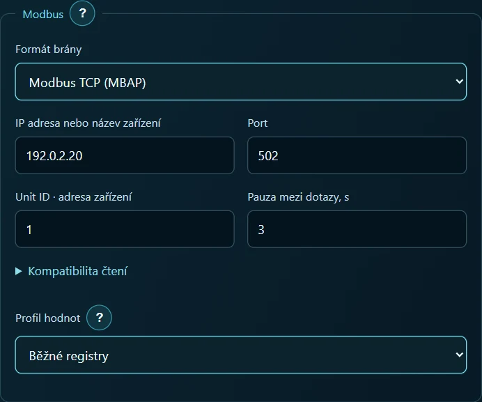
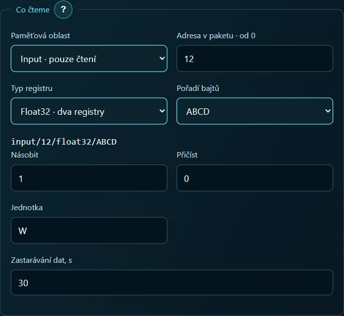
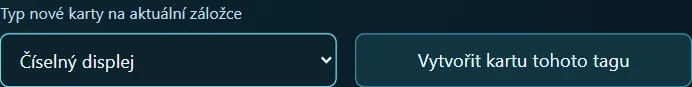
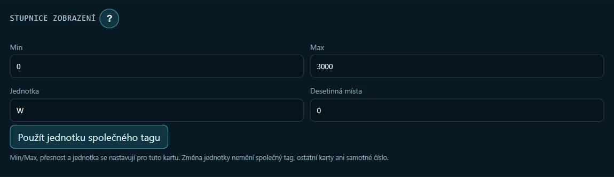
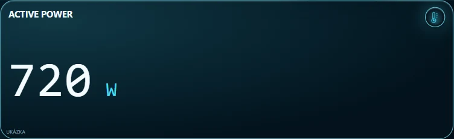

Činný výkon elektroměru Eastron SDM120 na tabletu
Na tabletu chci vidět, kolik wattů právě odebírá zátěž. SDM120-Modbus komunikuje přes RS-485 a tablet je ve Wi-Fi. Obě strany propojí síťová brána. V tomto cvičení přečteme jednu veličinu, činný výkon. Celý postup si můžete vyzkoušet i s cvičným serverem na počítači.
Zdroj dat · Připojení brány · Nastavení registru · Číselný displej · Kontrola údaje
1. Vyberte zdroj měření
S elektroměrem. Potřebujete ARAAMA 0.1.10, nainstalovaný SDM120-Modbus, bránu Ethernet nebo Wi-Fi ↔ RS-485 a přístup k nastavení brány. Zjistěte její síťovou adresu, port, formát přenosu a adresu elektroměru na sběrnici (Unit ID). Přenosová rychlost, parita a počet stop bitů se na straně RS-485 musí shodovat. Brána musí být z tabletu dostupná po síti.
S počítačem. Stáhněte si cvičný elektroměr a hotový panel. Archiv rozbalte na počítači s Pythonem 3. Ve složce se souborem simulate_meter.py spusťte příkaz níže. Za 192.168.1.20 dosaďte lokální adresu tohoto počítače. Tablet připojte ke stejné síti.
python simulate_meter.py --bind 192.168.1.20 --port 1502 --watts 720
Terminál nechte otevřený. Server odpovídá na čtení přes Modbus TCP pro Unit ID 1. Pro jiný údaj ukončete server pomocí Ctrl+C a spusťte jej s --watts 350. Chcete-li použít hotový displej, nejprve v Nastavení → Projekty exportujte aktuální projekt a otevřete přiložený panel.json. Pro ruční sestavení začněte na prázdné cvičné obrazovce. ARAAMA 0.1.10 a příručky
2. Nastavte připojení k bráně
V Nastavení → Síť vyberte připojení SDM120 z projektu. Při ručním nastavení zvolte + Připojení, zadejte SDM120 a jako protokol vyberte Modbus TCP. Formát přenosu nastavte podle brány.
| Pole připojení | Cvičný server | Skutečná brána |
|---|---|---|
| Formát brány | Modbus TCP (MBAP) | MBAP pro převod TCP na RTU. Pro transparentní sériový most zvolte Modbus RTU přes TCP (RS-485) |
| IP nebo název | Adresa počítače z příkazu výše | Síťová adresa brány |
| Port | 1502 | Port nastavený v bráně, u MBAP často 502 |
| Unit ID | 1 | Adresa elektroměru na RS-485 |
| Prodleva mezi dotazy | 3 s | Pro tento pokus 3 s |
| Profil / časový limit | Běžné registry / 5000 ms | Pro první pokus běžné registry / 5000 ms |

Stiskněte Uložit připojení. Síťová adresa určuje bránu, zatímco Unit ID vybírá přístroj na sběrnici za ní. Výchozí limit 125 registrů na jeden dotaz zde vyhovuje. Jeden údaj o výkonu zabírá dva sousední registry.
3. Vytvořte tag pro činný výkon
Otevřete Nastavení → Tagy → + Tag. Zadejte název Active power, připojení SDM120 a přístup pouze pro čtení. V hotovém panelu otevřete existující tag Active power. V části pro čtení nastavte:
| Pole | Hodnota |
|---|---|
| Oblast paměti | Input, pouze čtení (funkce 04) |
| Adresa v paketu počítaná od nuly | 12 |
| Typ registru | Float32, dva registry |
| Pořadí bajtů | ABCD pro původní pořadí Eastron |
| Násobek / posun | 1 / 0 |
| Jednotka / zastarání | W / 30 s |
V mapě tohoto modelu má řádek 30013 — Active power počáteční adresu 0x000C, tedy desítkově 12. ARAAMA očekává adresu v paketu. Zkontrolujte výsledný zápis input/12/float32/ABCD a zvolte Uložit tag. Mapa registrů Eastron, strana 5

4. Přidejte číselný displej
U uloženého tagu Active power otevřete Použití na obrazovkách. Zvolte Číselný displej → Vytvořit kartu tohoto tagu. V parametrech karty ponechte název Active power, jednotku W a nastavte 0 desetinných míst. Číselný displej nepotřebuje hranice stupnice. Hotový projekt už má k tagu přiřazený jeden displej.


5. Porovnejte údaj
Spusťte panel a vyčkejte na další dotaz. S parametrem --watts 720 má karta ukázat 720 W. Když server znovu spustíte s --watts 350, stejná karta po obnovení spojení ukáže 350 W.

Na skutečném elektroměru zvolte činný výkon a při ustálené zátěži porovnejte displeje. Například 0,72 kW na elektroměru odpovídá 720 W na tabletu. Je-li karta prázdná, zkontrolujte IP adresu, port a Unit ID. Při chybě adresy ověřte Input, 12, dva registry. Jestliže má hodnota nesmyslný řád, zkontrolujte Float32, pořadí bajtů brány a násobek tagu.